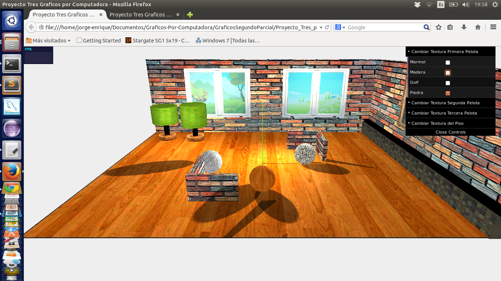
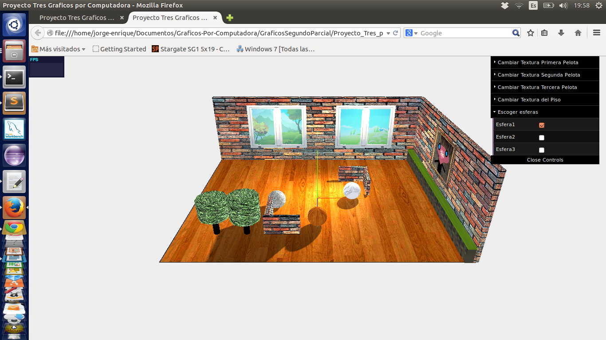

Write Up
Integrantes:
Oswaldo Bayona Andrade
Rodrigo Castro Reyes
Jorge Vergara Palma
Manejo de Texturas:
El Proyecto Permite cambiar de forma dinamica la textura que recubre a ciertos objetos en la escena, estos objetos son:
las Pelotas y el piso. Para realizar este cambio tenemos una menu de contro, para usar ese menu solo tenemos que escoger el objeto y escoger el tipo de textura.

Animacion 1(Movimiento indivdual):
Esta animacion condiste en escoger un destino para una pelota en particula , para escoger la pelota tenemos un menu desplegable, para determinar el destino solo debemos dar chick sobre el lugar.

Animacion 2(Seguimiento del mouse):
En esta animacion escogeremos una pelota para que siga los movimientos del rato del computador, para escoger la pelota solo debemos dar click sobre ella, para dejar de seleccionarla debemos dar clik sobre cualquier lugar.
Animacion 3(Movimiento Grupal):
Esta ultima animacion es una variante de la primera, pero ahora no debemos escoger la pelota que debe viajar ya que aqui todas las pelotas deben viajar a un mismo punto simulando el movimeinto de un grupo, para escoger el punto de llegada solo debemos dar click sobre la pantalla.
Video Animacion 3